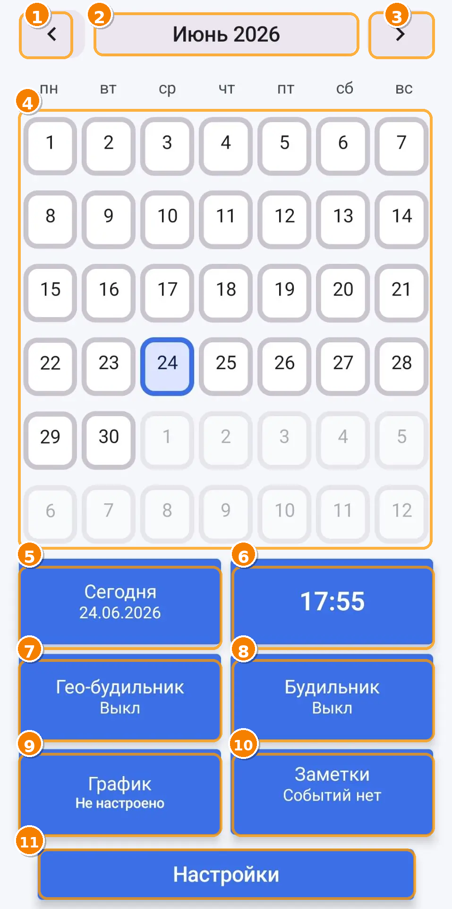

Instrukcja ShiftAlarm
Wersja 2. Data: 24.06.2026.
1. Pierwsze uruchomienie
Przy pierwszym uruchomieniu ShiftAlarm pokazuje krótkie okno konfiguracji. Ekran główny jest już dostępny w tle, ale najpierw warto przejść podstawową konfigurację.
- Przeczytaj opis powitalny i naciśnij „Kontynuuj”.
- Na kroku dokumentów otwórz dokumenty albo zaakceptuj wymagane dokumenty, gdy chcesz przejść dalej.
- Na kroku uprawnień otwórz ekran uprawnień i sprawdź powiadomienia, dokładne alarmy, lokalizację oraz ograniczenia baterii.
- Naciśnij „Zakończ konfigurację”.
Do uprawnień możesz wrócić później w Ustawieniach.
2. Uprawnienia i niezawodność
Alarmy, przypomnienia i geoalarmy zależą od ustawień Androida oraz producenta urządzenia.
- Powiadomienia są potrzebne do alarmów, przypomnień, timera i powiadomień serwisowych.
- Dokładne alarmy pomagają uruchamiać sygnał o właściwej godzinie.
- Lokalizacja jest potrzebna do geoalarmów.
- Lokalizacja w tle jest potrzebna, gdy aplikacja jest zamknięta.
- Bateria / praca w tle może wpływać na działanie na Xiaomi/Redmi i niektórych innych urządzeniach.
Android nie zawsze gwarantuje natychmiastowe dostarczenie powiadomień, dokładnych alarmów i geostref.
3. Ekran główny
Ekran główny to panel dnia. Zapewnia szybki dostęp do kalendarza, zegara, geoalarmów, zwykłych alarmów, grafików zmian, notatek i ustawień.

- Poprzedni miesiąc — przesuwa kalendarz do poprzedniego miesiąca.
- Miesiąc i rok — pokazuje wybrany miesiąc. Dotknięcie otwiera wybór daty.
- Następny miesiąc — przesuwa kalendarz do następnego miesiąca.
- Kalendarz — główny obszar miesiąca. Kalendarz można przesuwać gestem. Dni mogą pokazywać datę, przypomnienia, wydarzenia, grafik zmian, zmiany dnia i zmiany dyżuru.
- Dzisiaj — przywraca kalendarz do bieżącego dnia.
- Zegar — otwiera zegary światowe, timer i stoper.
- Geoalarm — otwiera mapę i listę geoalarmów. Geoalarm może uruchomić sygnał przy wejściu do wybranej strefy, wyjściu z niej albo przy obu zdarzeniach.
- Alarm — otwiera zwykłe alarmy, alarmy na datę, alarmy powtarzane i alarmy powiązane ze zmianami.
- Grafik — otwiera grafiki zmian, kalendarz zmian i ustawienia aktywnego grafiku.
- Notatki — otwiera notatki, wydarzenia, przypomnienia, notatki audio i transkrypcję audio na tekst.
- Ustawienia — otwiera uprawnienia, język, motyw, kopię zapasową, diagnostykę, dokumenty i szkolenie.
4. Grafiki zmian
Grafik zmian jest używany przez kalendarz, alarmy zmianowe, obliczanie wynagrodzenia i widżety kalendarza.
- Otwórz „Grafik”.
- Utwórz nowy grafik albo edytuj istniejący.
- Ustaw typ grafiku, dni pracy, zmiany i kolory.
- Ustaw wymagany grafik jako aktywny.
5. Alarmy
ShiftAlarm obsługuje zwykłe alarmy, alarmy według dni tygodnia, alarmy na datę i alarmy powiązane ze zmianami.
- Otwórz „Alarmy”.
- Naciśnij dodawanie alarmu.
- Wybierz godzinę, powtarzanie, dźwięk, wibracje, czas trwania, drzemkę i narastanie głośności.
- Dla alarmu zmianowego wybierz tryb zmiany i aktywny grafik.
- Zapisz alarm.
6. Geoalarmy
Geoalarm uruchamia sygnał przy wejściu do wybranej strefy, wyjściu z niej albo przy obu zdarzeniach.
- Otwórz „Geoalarm”.
- Przytrzymaj wybrany punkt na mapie.
- Wybierz promień. Dla większej niezawodności zalecane jest 800–1000 m.
- Wybierz tryb: wejście, wyjście albo wejście/wyjście.
- Ustaw dźwięk, wibracje, harmonogram i zapisz.
Na niektórych urządzeniach geostrefa może zadziałać z opóźnieniem.
7. Notatki, wydarzenia i przypomnienia
Notatki pomagają przechowywać zadania, wydarzenia, listy kontrolne, audio i przypomnienia.
- Notatka — zwykły tekst lub bloki.
- Wydarzenie — element przypisany do daty.
- Przypomnienie — element z powiadomieniem.
- Audio — nagranie głosowe.
- Transkrypcja — zamiana audio na tekst, jeśli dostępny jest model lub silnik systemowy.
8. Zegar, timer i stoper
Sekcja zegara zawiera zegary światowe, timer i stoper.
- Dodawaj miasta i strefy czasowe.
- Timer może działać w tle.
- Stoper może zapisywać sesje i okrążenia.
9. Widżety
ShiftAlarm obsługuje widżety ekranu głównego Androida.
- Today 4×2 — kompaktowy panel z dwoma blokami.
- Today 4×3 — zegar na górze i dwa bloki niżej.
- Calendar 4×4 — widżety kalendarza zmian.
10. Wynagrodzenie
Sekcja wynagrodzenia pomaga orientacyjnie policzyć dochód ze zmian, premii, sprzedaży i potrąceń.
To narzędzie pomocnicze. Wynik należy porównać z oficjalnymi zasadami i dokumentami pracodawcy.
11. Kopia zapasowa
Kopia zapasowa zapisuje ustawienia użytkownika i dane aplikacji.
- Otwórz Ustawienia → Kopia zapasowa.
- Naciśnij „Zapisz”, aby zapisać plik na telefonie.
- Naciśnij „Udostępnij”, aby wysłać plik.
- Aby przywrócić dane, wybierz plik kopii zapasowej.
12. Diagnostyka i błędy
Aplikacja ma dzienniki diagnostyczne dla oddzielnych funkcji. Pomagają znaleźć przyczynę problemu.
- Otwórz Ustawienia → Diagnostyka.
- Wybierz odpowiedni dział.
- Skopiuj dziennik i wyślij go razem z opisem problemu.
13. Najczęstsze pytania
Alarm nie zadzwonił na czas
Sprawdź powiadomienia, dokładne alarmy, pracę w tle i ograniczenia baterii.
Geoalarm zadziałał z opóźnieniem
Zwiększ promień do 800–1000 m i sprawdź lokalizację oraz baterię.
Widżet nie zaktualizował się od razu
Otwórz aplikację albo naciśnij przycisk odświeżenia na widżecie.